Solo: A Star Wars Story
10/05/18
Alden Ehrenreich | Emilia Clarke | Woody Harrelson | Childish Gambino
OFFICIAL TRAILER
SYNOPSIS
Board the Millennium Falcon and journey to a galaxy far, far away in Solo: A Star Wars Story, an all-new adventure with the most beloved scoundrel in the galaxy. Through a series of daring escapades deep within a dark and dangerous criminal underworld, Han Solo meets his mighty future copilot Chewbacca and encounters the notorious gambler Lando Calrissian, in a journey that will set the course of one of the Star Wars saga’s most unlikely heroes. Solo stars Alden Ehrenreich as the young space smuggler made famous by Harrison Ford. The cast also includes Donald Glover as Calrissian, Game of Thrones’ Emilia Clarke, Woody Harrelson and Michael Kenneth Williams. Ron Howard directed the film, though he arrived after the franchise split with original directors, Phil Lord and Christopher Miller, over creative differences. Star Wars vet Lawrence Kasdan wrote Solo with his son, Jon Kasdan.
Solo marks the second Star Wars anthology film, following 2016’s Rogue One, and a third is scheduled to arrive in 2020. Meanwhile, Episode IX of the main franchise series is set to arrive December 20th, 2019, with Force Awakens director J.J. Abrams taking over the film following the departure of Colin Trevorrow.
While not much else is known about the film, director Ron Howard has documented his experience making Solo: A Star Wars Story on Twitter and Instagram throughout production — with everything from set photos to shots of his morning coffee.